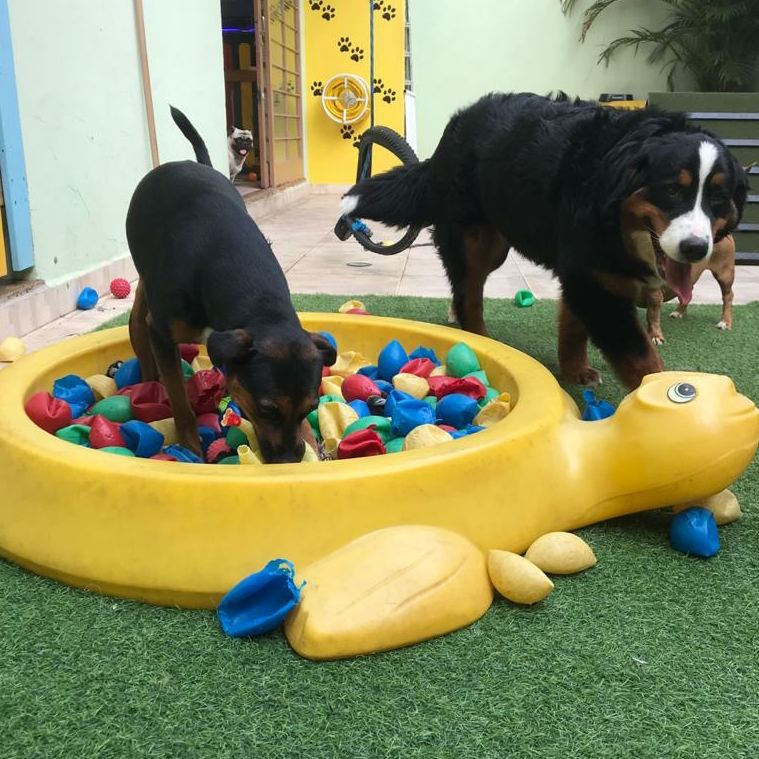
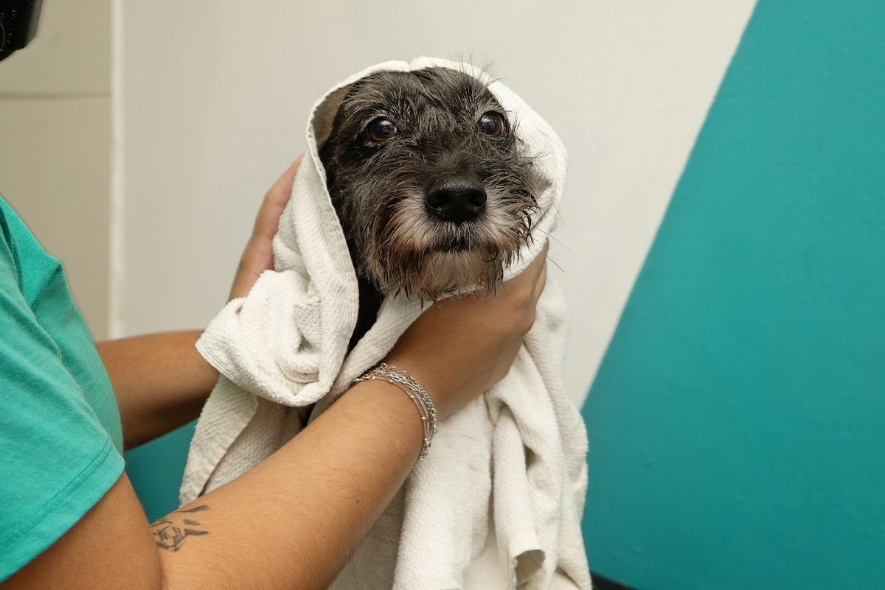
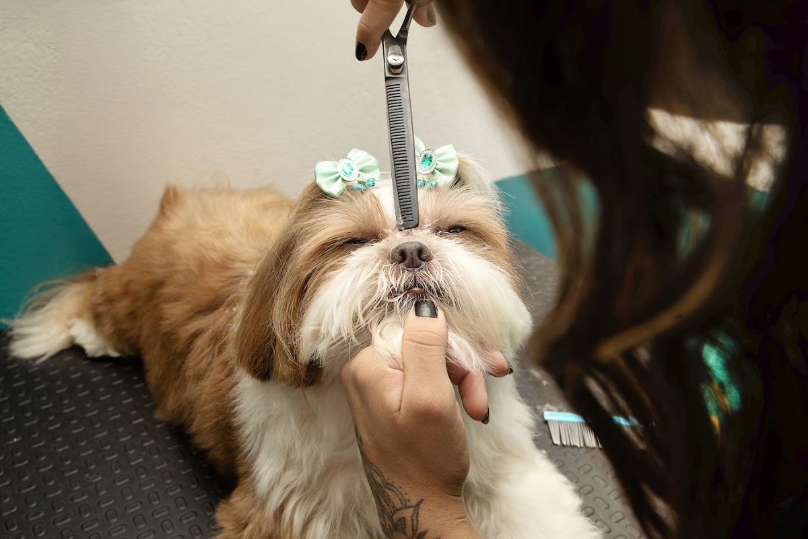
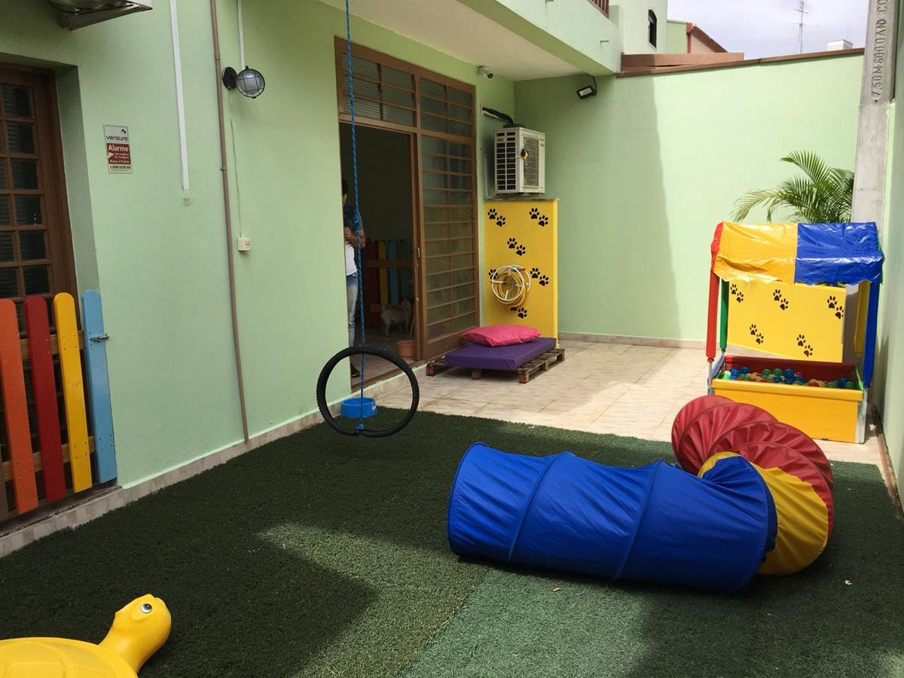
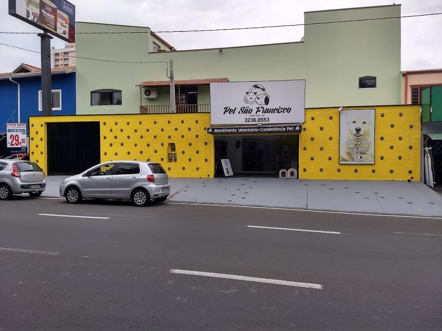

Seu pet seguro, como se estivesse em casa.
Banho e tosa com calma e carinho, creche com piscina de bolinhas, consultório veterinário, rações e táxi dog. Tudo num lugar só, no Jardim Nova Europa.
4,7 ★ com 175 avaliações no Google



Tudo que o seu pet precisa
Banho e tosa
Com calma, sem pressa e pensando no bem-estar antes da estética.
Creche (day care)
Brincadeira, gasto de energia e companhia o dia inteiro.
Veterinário
Consultório no próprio espaço.
Rações e petiscos
Também medicamentos e acessórios. Peça pelo iFood.
Táxi dog
Buscamos e levamos o seu pet.
Hotel
Na unidade da divisa Campinas–Valinhos (@petsaofranciscohotel).

Volta pra casa cansado e feliz
Espaço com grama, túneis e piscina de bolinhas. Os tutores contam que os cães "adoram a farra".
- Para quem trabalha fora e não quer deixar o pet sozinho
- Ajuda a gastar energia e a socializar
- Dá para juntar com banho e táxi dog no mesmo dia
Marque o horário em 20 segundos
Escolha e mande pronto no WhatsApp. A equipe confirma o horário e o valor.
1. O que vai ser?
2. Porte
3. Precisa de táxi dog?
4. Nome e raça
Os tutores contam
"Meus cães amam o banho. Minha capelinha vai sempre no hotel e creche, super confiável. Ela adora e volta super cansada."Ellen · Google
"Só levo meu cachorro lá, ele é super bem tratado, profissionais super qualificados, atendimento maravilhoso."Mayara · Google
"Banho dos dogs sempre no capricho, e adoram a farra e diversão na creche."Avaliação no Google

A casa amarela de bolinhas
| Segunda a sexta | 8h às 18h |
| Sábado | 8h30 às 16h30 |
Av. Piçarrão, 135 (esquina com a R. Plínio Pereira Neves) · Jardim Nova Europa
WhatsApp (19) 99206-6111 · @petsaofranciscocampinas